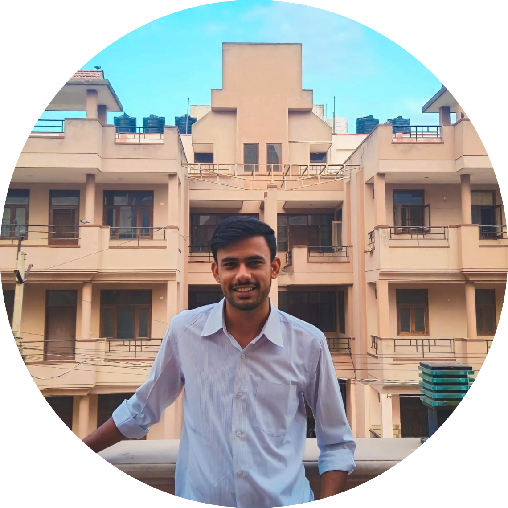
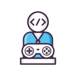
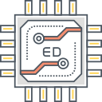

Hi, my name is Parth
and I am a passionate

Work Experience

C++ Developer(2020-2021)
I started my C++ journey with basic syntax, then progressed to object-oriented programming and
core concepts. I focused heavily on DSA development, mastering arrays, linked lists, stacks,
queues, trees, and algorithms. I applied my skills in real-world projects like a Snake Game and
also converted Python projects to C++, enhancing my problem-solving and development
capabilities.

Python Developer(2021-2022)
I began my Python journey by learning the fundamentals like variables, loops, and functions,
then advanced to working with libraries such as requests, json, and turtle. I developed
real-world projects like an ISS Tracker and a Snake Game, structured with multiple modules. I
explored backend development, API integration.

Game Developer(2022-2023)
My Game Development journey began with a passion for interactive design and logic, focusing on
object-oriented principles and modular design. As I progressed, I explored advanced engines like
Unreal Engine 5, aiming to build immersive experiences such as Physics mechanics and character
animations. This journey allowed me to blend creativity with code, expanding my skills in
gameplay mechanics, UI/UX, and real-time data integration in games.

Embedded Systems(2023-2024)
My Embedded Systems journey began with hands-on experimentation using Arduino and Embedded C++.
I built projects like an LED blinking system and explored interfacing sensors like ultrasonic
modules. I focused on understanding microcontroller programming, circuit logic, and real-world
hardware control. This journey helped me bridge the gap between software and hardware, sparking
my interest in IoT and real-time embedded applications.

AI Development(2024-2025)
My GenAI journey started with exploring language models and quickly evolved into building
intelligent tools using frameworks like LangChain, Streamlit, and ChromaDB. I developed advanced
applications such as a Cold Email Generator and a news-based QA chatbot, integrating LLMs like
Llama for real-time, reference-backed responses. I focused on combining AI reasoning with
practical use cases, mastering prompt engineering & RAG technique